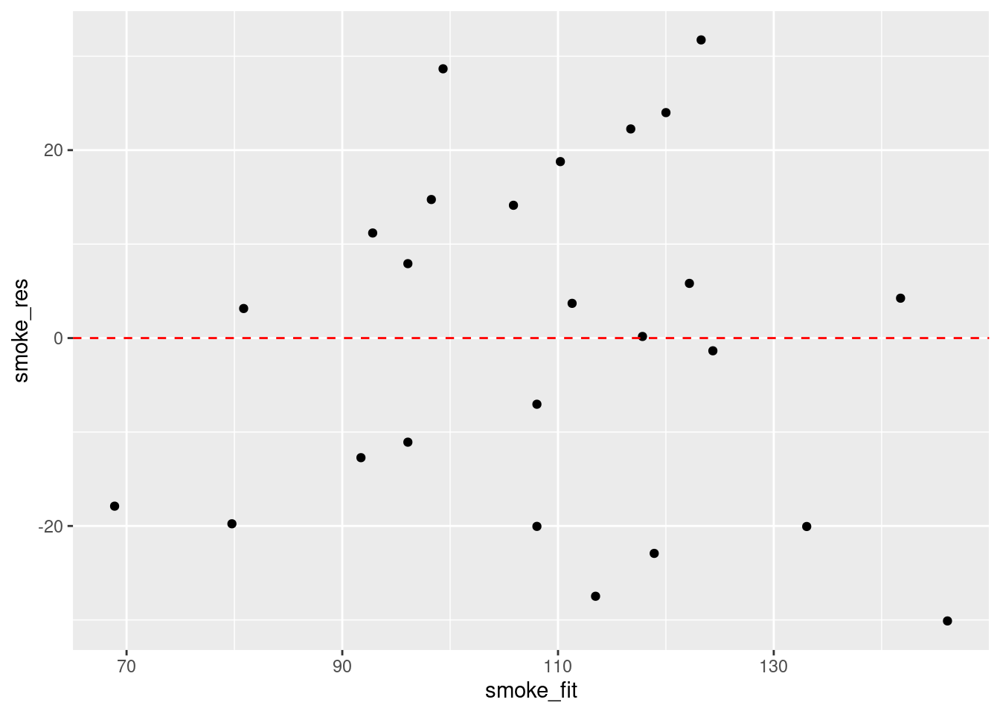

To be developed (need to decide what I want in that chapter) Potentially just list a few functions since it is not at all about stats but more about r
5.1 Simple linear modelling
Linear models are one of the most widely used models in statistics and data science. They are often thought of as simple models but they’re very flexible and able to model a wide variety of experimental and survey designs. Many of the statistical approaches you may have used previously (such as linear regression, t-test, ANOVA, ANCOVA etc) can be expressed as a linear model so the good news is that you’re probably already familiar with linear models (albeit indirectly). They also form the foundation of more complicated modelling approaches and are relatively easy to extended to incorporate additional complexity. During this section we’ll learn how to fit some simple linear models using R and cover some of the more common applications. We won’t go into any detail of the underlying linear modelling theory but rather focus on the practicalities of model fitting and R code.
The main function for fitting linear models in R is the lm() function (short for linear model!). The lm() function has many arguments but the most important is the first argument which specifies the model you want to fit using a model formula which typically takes the general form:
response variable ~ explanatory variable(s)
This model formula is simply read as
‘variation in the response variable modelled as a function (~) of the explanatory variable(s)’.
The response variable is also commonly known as the ‘dependent variable’ and the explanatory variables are sometimes referred to as ‘independent variables’ (or less frequently as ‘predictor variables’). There is also an additional term in our model formula which represents the variation in our response variable not explained by our explanatory variables but you don’t need to specify this when using the lm() function.
As mentioned above, many of the statistical ‘tests’ you might have previously used can be expressed as a linear model. For example, if we wanted to perform a bivariate linear regression between a response variable (y) and a single continuous explanatory variable (x) our model formula would simply be
y ~ x
On the other hand, if we wanted to use an ANOVA to test whether the group means of a response variable (y) were different between a three level factor (x) our model formula would look like
y ~ x
OK, hang on, they both look identical, what gives? In addition to the model formula, the type of linear model you fit is also determined by the type of data in your explanatory variable(s) (i.e. what class of data). If your explanatory variable is continuous then you will fit a bivariate linear regression. If your explanatory variable is a factor (i.e. categorical data) you will fit an ANOVA type model.
You can also increase the complexity of your linear model by including additional explanatory variables in your model formula. For example, if we wanted to fit a two-way ANOVA both of our explanatory variables x and z would need to be factors and separated by a + symbol
y ~ x + z
If we wanted to perform a factorial ANOVA to identify an interaction between both explanatory variables we would separate our explanatory variables with a : symbol whilst also including our main effects in our model formula
y ~ x + z + x:z
or by using the equivalent shortcut notation
y ~ x * z
It’s important that you get comfortable with using model formula (and we’ve only given the briefest of explanations above) when using the lm() function (and other functions) as it’s remarkably easy to specifiy a model which is either nonsense or isn’t the model you really wanted to fit. A summary table of various linear model formula and equivalent R code given below.
Traditional name
Model formula
R code
Bivariate regression
Y ~ X1 (continuous)
lm(Y ~ X)
One-way ANOVA
Y ~ X1 (categorical)
lm(Y ~ X)
Two-way ANOVA
Y ~ X1 (cat) + X2(cat)
lm(Y ~ X1 + X2)
ANCOVA
Y ~ X1 (cat) + X2(cont)
lm(Y ~ X1 + X2)
Multiple regression
Y ~ X1 (cont) + X2(cont)
lm(Y ~ X1 + X2)
Factorial ANOVA
Y ~ X1 (cat) * X2(cat)
lm(Y ~ X1 * X2) or lm(Y ~ X1 + X2 + X1:X2)
OK, time for an example. The data file smoking.txt summarises the results of a study investigating the possible relationship between mortality rate and smoking across 25 occupational groups in the UK. The variable occupational.group specifies the different occupational groups studied, the risk.group variable indicates the relative risk to lung disease for the various occupational groups and smoking is an index of the average number of cigarettes smoked each day (relative to the number smoked across all occupations). The variable mortality is an index of the death rate from lung cancer in each group (relative to the death rate across all occupational groups). In this data set, the response variable is mortality and the potential explanatory variables are smoking which is numeric and risk.group which is a three level factor. The first thing to do is import our data file using the read.table() function as usual and assign the data to an object called smoke. You can find a link to download these data here.
# vec.len argument to limited number of ' first elements' to display
Next, let’s investigate the relationship between the mortality and smoking variables by plotting a scatter plot. We can use either the ggplot2 package or base R graphics to do this. We’ll use ggplot2 this time and our old friend the ggplot() function.
The plot does suggest that there is a positive relationship between the smoking index and mortality index.
To fit a simple linear model to these data we will use the lm() function and include our model formula mortality ~ smoking and assign the results to an object called smoke_lm.
Notice that we have not used the $ notation to specify the variables in our model formula, instead we’ve used the data = smoke argument. Although the $ notation will work (i.e. smoke$mortality ~ smoke$smoking) it will more than likely cause you problems later on and should be avoided. In fact, we would go as far to suggest that if any function has a data = argument you should always use it. How do you know if a function has a data = argument? Just look in the associated help file.
Perhaps somewhat confusingly (at least at first) it appears that nothing much has happened, you don’t automatically get the voluminous output that you normally get with other statistical packages. In fact, what R does, is store the output of the analysis in what is known as a lm class object (which we have called smoke_lm) from which you are able to extract exactly what you want using other functions. If you’re brave, you can examine the structure of the smoke_lm model object using the str() function.
Call:
lm(formula = mortality ~ smoking, data = smoke)
Residuals:
Min 1Q Median 3Q Max
-30.107 -17.892 3.145 14.132 31.732
Coefficients:
Estimate Std. Error t value Pr(>|t|)
(Intercept) -2.8853 23.0337 -0.125 0.901
smoking 1.0875 0.2209 4.922 5.66e-05 ***
---
Signif. codes: 0 '***' 0.001 '**' 0.01 '*' 0.05 '.' 0.1 ' ' 1
Residual standard error: 18.62 on 23 degrees of freedom
Multiple R-squared: 0.513, Adjusted R-squared: 0.4918
F-statistic: 24.23 on 1 and 23 DF, p-value: 5.658e-05
This shows you everything you need to know about the parameter estimates (intercept and slope), their standard errors and associated t statistics and p values. The estimate for the Intercept suggests that when the relative smoking index is 0 the relative mortality rate is -2.885! The p value associated with the intercept tests the null hypothesis that the intercept is equal to zero. As the p value is large we fail to reject this null hypothesis. The smoking parameter estimate (1.0875) is the estimate of the slope and suggests that for every unit increase in the average number of cigarettes smoked each day the mortality risk index increases by 1.0875. The p value associated with the smoking parameter tests whether the slope of this relationship is equal to zero (i.e. no relationship). As our p value is small we reject this null hypothesis and therefore the slope is different from zero and therefore there is a significant relationship. The summary table also includes other important information such as the coefficient of determination (R2), adjusted R2 , F statistic, associated degrees of freedom and p value. This information is a condensed form of an ANOVA table which you can see by using the anova() function.
Analysis of Variance Table
Response: mortality
Df Sum Sq Mean Sq F value Pr(>F)
smoking 1 8395.7 8395.7 24.228 5.658e-05 ***
Residuals 23 7970.3 346.5
---
Signif. codes: 0 '***' 0.001 '**' 0.01 '*' 0.05 '.' 0.1 ' ' 1
Now let’s fit another linear model, but this time we will use the risk.group variable as our explanatory variable. Remember the risk.group variable is a factor and so our linear model will be equivalent to an ANOVA type analysis. We will be testing the null hypothesis that there is no difference in the mean mortality rate between the low, medium and high groups. We fit the model in exactly the same way as before.
smoke_risk_lm<-lm(mortality~risk.group, data =smoke)
Again, we can produce an ANOVA table using the anova() function
Analysis of Variance Table
Response: mortality
Df Sum Sq Mean Sq F value Pr(>F)
risk.group 2 11514.4 5757.2 26.107 1.554e-06 ***
Residuals 22 4851.6 220.5
---
Signif. codes: 0 '***' 0.001 '**' 0.01 '*' 0.05 '.' 0.1 ' ' 1
The results presented in the ANOVA table suggest that we can reject the null hypothesis (very small p value) and therefore the mean mortality rate index is different between low, medium and high risk groups.
As we did with our first linear model we can also produce a summary of the estimated parameters using the summary() function.
Call:
lm(formula = mortality ~ risk.group, data = smoke)
Residuals:
Min 1Q Median 3Q Max
-26.17 -11.45 4.00 9.00 26.83
Coefficients:
Estimate Std. Error t value Pr(>|t|)
(Intercept) 135.00 5.25 25.713 < 2e-16 ***
risk.grouplow -57.83 8.02 -7.211 3.16e-07 ***
risk.groupmedium -27.55 6.90 -3.992 0.000615 ***
---
Signif. codes: 0 '***' 0.001 '**' 0.01 '*' 0.05 '.' 0.1 ' ' 1
Residual standard error: 14.85 on 22 degrees of freedom
Multiple R-squared: 0.7036, Adjusted R-squared: 0.6766
F-statistic: 26.11 on 2 and 22 DF, p-value: 1.554e-06
In the summary table the Intercept is set to the first level of risk.group (high) as this occurs first alphabetically. Therefore, the estimated mean mortality index for high risk individuals is 135. The estimates for risk.grouplow and risk.groupmedium are mean differences from the intercept (high group). So the mortality index for the low group is 135 - 57.83 = 77.17 and for the medium group is 135 - 27.55 = 107.45. The t values and p values in the summary table are associated with testing specific hypotheses. The p value associated with the intercept tests the null hypothesis that the mean mortality index for the high group is equal to zero. To be honest this is not a particularly meaningful hypothesis to test but we can reject it anyway as we have a very small p value. The p value for the risk.grouplow parameter tests the null hypothesis that the mean difference between high and low risk groups is equal to zero (i.e. there is no difference). Again we reject this null hypothesis and conclude that the means are different between these two groups. Similarly, the p value for risk.groupmedium tests the null hypothesis that the mean difference between high and medium groups is equal to zero which we also reject.
Don’t worry too much if you find the output from the summary() function a little confusing. Its takes a bit of practice and experience to be able to make sense of all the numbers. Remember though, the more complicated your model is, the more complicated your interpretion will be. And always remember, a model that you can’t interpret is not worth fitting (most of the time!).
Another approach to interpreting your model output is to plot a graph of your data and then add the fitted model to this plot. Let’s go back to the first linear model we fitted (smoke_lm). We can add the fitted line to our previous plot using the ggplot2 package and the geom_smooth geom. We can easily include the standard errors by specifying the se = TRUE argument.
You can also do this with R’s base graphics. Note though that the fitted line extends beyond the data which is not great practice. If you want to prevent this you can generate predicted values from the model using the predict() function within the range of your data and then add these values to the plot using the lines() function (not shown).
Before we sit back and relax and admire our model (or go write that high impact paper your supervisor/boss has been harassing you about) our work is not finished. It’s vitally important to check the underlying assumptions of your linear model. Two of the most important assumption are equal variances (homogeneity of variance) and normality of residuals. To check for equal variances we can construct a graph of residuals versus fitted values. We can do this by first extracting the residuals and fitted values from our model object using the resid() and fitted() functions.
And then plot them using ggplot or base R graphics.
ggplot(mapping =aes(x =smoke_fit, y =smoke_res))+geom_point()+geom_hline(yintercept =0, colour ="red", linetype ="dashed")

It takes a little practice to interpret these types of graph, but what you are looking for is no pattern or structure in your residuals. What you definitely don’t want to see is the scatter increasing around the zero line (red dashed line) as the fitted values get bigger (this has been described as looking like a trumpet, a wedge of cheese or even a slice of pizza) which would indicate unequal variances (heteroscedacity).
To check for normality of residuals we can use our old friend the Q-Q plot using the residuals stored in the smoke_res object we created earlier.
Alternatively, you can get R to do most of the hard work by using the plot() function on the model object smoke_lm. Before we do this we should tell R that we want to plot four graphs in the same plotting window in RStudio using the par(mfrow = c(2,2)). This command splits the plotting window into 2 rows and 2 columns.
The first two graphs (top left and top right) are the same residual versus fitted and Q-Q plots we produced before. The third graph (bottom left) is the same as the first but plotted on a different scale (the absolute value of the square root of the standardised residuals) and again you are looking for no pattern or structure in the data points. The fourth graph (bottom right) gives you an indication whether any of your observations are having a large influence (Cook’s distance) on your regression coefficient estimates. Levearge identifies observations which have unusually large values in their explanatory variables.
You can also produce these diagnostic plots using ggplot by installing the package ggfortify and using the autoplot() function.
What you do about influential data points or data points with high leverage is up to you. If you would like to examine the effect of removing one of these points on the parameter estimates you can use the update() function. Let’s remove data point 2 (miners, mortality = 116 and smoking = 137) and store the results in a new object called smoke_lm2. Note, we do this to demonstrate the use of the update() function. You should think long and hard about removing any data point(s) and if you do you should always report this and justify your reasoning.
Call:
lm(formula = mortality ~ smoking, data = smoke, subset = -2)
Residuals:
Min 1Q Median 3Q Max
-29.7425 -11.6920 -0.4745 13.6141 28.7587
Coefficients:
Estimate Std. Error t value Pr(>|t|)
(Intercept) -20.0755 23.5798 -0.851 0.404
smoking 1.2693 0.2297 5.526 1.49e-05 ***
---
Signif. codes: 0 '***' 0.001 '**' 0.01 '*' 0.05 '.' 0.1 ' ' 1
Residual standard error: 17.62 on 22 degrees of freedom
Multiple R-squared: 0.5813, Adjusted R-squared: 0.5622
F-statistic: 30.54 on 1 and 22 DF, p-value: 1.488e-05
There are numerous other functions which are useful for producing diagnostic plots. For example, rstandard() and rstudent() returns the standardised and studentised residuals. The function dffits() expresses how much an observation influences the associated fitted value and the function dfbetas() gives the change in the estimated parameters if an observation is excluded, relative to its standard error (intercept is the solid line and slope is the dashed line in the example below). The solid bold line in the same graph represents the Cook’s distance. Examples of how to use these functions are given below.
As with most things R related, a complete description of the variety and flexibility of different statistical analyses you can perform is beyond the scope of this introductory text. Further information can be found in any of the excellent documents referred to in Chapter 2. A table of some of the more common statistical functions is given below to get you started.